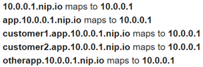

We are going to deploy our guestbook to a production environment.
For this we requirement some additional components:
- Nginx a performant static web server and reverse proxy, to handle static files and SSL encryption for https.
- A domain name and setting up the certificate
- Gunicorn a production HTTP server for python supporting WSGI (Web Server Gateway Interface)
- Systemd a service manager which allows us to start our application on server boot.
A request arrives to nginx, if the file is static it will be served directly. If it is an url which needs to be handled by python/Flask it will be forwarded to the application server (gunicorn). The communication between nginx and gunicorn can be done via tcp/ip or via unix domain socket on the same machine.
On a virtual machine with Debian or Ubuntu which has a public ip.
Cloud provider not your local virtual machine!
Install Nginx
sudo apt update sudo apt install nginx
After installing it, you already have everything you need.
Test your site
You can point your browser to your server public IP address. You should see this page:
If you see this page, you have successfully installed Nginx on your web server.
Our guestbook web site requires a name so we don't have to remember the external IP address to access it. To do so, visit a free DNS registration service and register a name on the VM's external IP address.
Once this is done you should be able to see the nginx starting page with a domain name instead of the ip.
Example services include
Note that if you get a rate-limit error on Let's Encrypt via one service, you will need to use the alternate ones. This is a result of Let's Encrypt being abused by malicious actors to create web sites with valid certificates that look legitimate. (This, of course, won't be an issue with our janky web application)
duckDNS
freeDNS

ipq.co


noip.com
(Note: omit the dash since it is not allowed).

xip.io
Some services allow you to specify a name that includes an IP address that it resolves to. If you have difficulty with the sites above, then use names from the following xip-based sites.

nip.io


sslip.io

We are going to use Let's Encrypt to get a free certificate.
Let's Encrypt is a non-profit certificate authority run by Internet Security Research Group that provides X.509 certificates for Transport Layer Security encryption at no charge.
These certificates need to be renewed every 90 days. To simplify the process there exists a tool called certbot which handles the process.
Install certbot
We are installing certbot and a nginx plugin which will handle the required changes in the web server configuration.
sudo apt-get install -y python3 certbot python3-certbot-nginx
Generate certificate
Let's generate our first certificate, we have to provide one or multiple domain names (replace --nginx -redirect
Will configure nginx with the new SSL certificate and enable redirecting clients from http to https.
sudo certbot -d <yourdomain.com> --nginx --redirect
Check that your site works with https
Nginx configuration files
Open nginx default site configuration files
sudo nano /etc/nginx/sites-enabled/default
Find all the lines added by certbot ending with # managed by Certbot
Download application
Clone the repository and change into the source directory
git clone https://github.com/bfritscher/guestbook-src.git cd guestbook-src/03_nginx_gunicorn_certbot
Install python
sudo apt-get install -y python3 python3-pip python3-venv
Create virtual env and install dependencies
python3 -m venv env source env/bin/activate pip3 install --upgrade -r requirements.txt
Test Gunicorn server
We are going to stop nginx and run gunicorn on port 80 just for testing. For that we need to run it as root. We provide gunicorn the name of the python module which contains a variable with the instantiation of a WSGI compatible application. In our guestbook app the app variable is inside the app.py file.
sudo systemctl stop nginx sudo gunicorn app:app --bind 0.0.0.0:80
Check that the guestbook app run by accessing it via the public ip on http.
ctrl + c to exit the server
We will start gunicorn as a daemon (a program that executes in the background) and bind to a socket. We will then configure nginx to forward traffic to it.
Start gunicorn as a daemon
We'll set an umask value of 007 so that the socket file is created giving access to the owner and group, while restricting other access
Workers and threads settings depend on your machine cpu and ram.
gunicorn --workers 1 --threads 8 --bind unix:gunicorn.sock -m 007 app:app --daemon
Configure the proxy
Now let s edit /etc/nginx/sites-enabled/default
In the server block which listens to 443 edit locations to the following values after replacing PROJECT_DIR with the correct location.
/etc/nginx/sites-enabled/default
location / {
include proxy_params;
proxy_pass http://unix:PROJECT_DIR/gunicorn.sock;
}
location /static {
alias PROJECT_DIR/static;
}This will redirect everything to gunicorn except files under /static.
Fix permissions
chmod 755 $HOME
Start nginx again
sudo systemctl start nginx
Test your guestbook app via the domain name. Everything should work now
Kill gunicorn
killall gunicorn
Last step let's configure Gunicorn to start at boot like nginx.
Create service file
systemd is the default service manager for Ubuntu. The file configures the startup of the gunicorn daemon and its environment.
Create a service file /etc/systemd/system/gunicorn-gb.service
With the following content (again replace PROJECT_DIR) you also need to replace PROJECT_USER with your username (try whoami).
gunicorn-gb.service
[Unit]
Description=Gunicorn instance to serve project
After=network.target
[Service]
User=PROJECT_USER
Group=www-data
WorkingDirectory=PROJECT_DIR
Environment="PATH=PROJECT_DIR/env/bin"
ExecStart=PROJECT_DIR/env/bin/gunicorn --workers 1 --threads 8 --bind unix:gunicorn.sock -m 007 app:app
[Install]
WantedBy=multi-user.targetStart service and enable it at boot
sudo systemctl start gunicorn-gb sudo systemctl enable gunicorn-gb
Add an entry to the guestbook and restart the server (sudo restart) to test if everything starts.
If you are on a paying cloud provider do not forget to clean up!
(on switch engine you can shelve the instance)